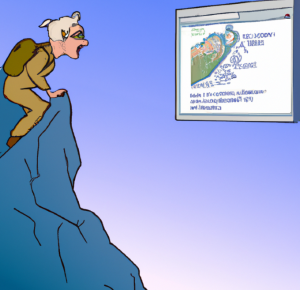
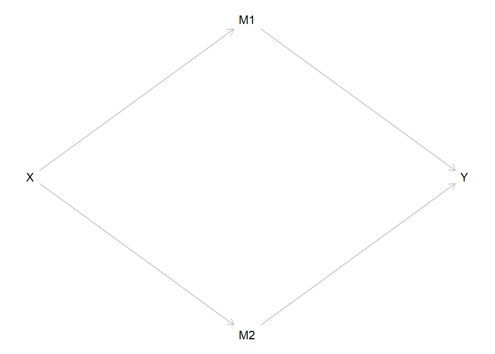
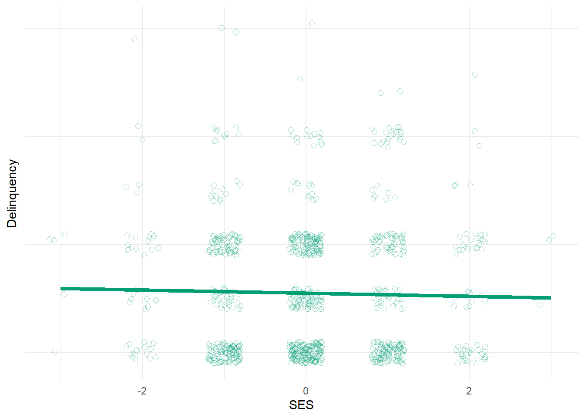
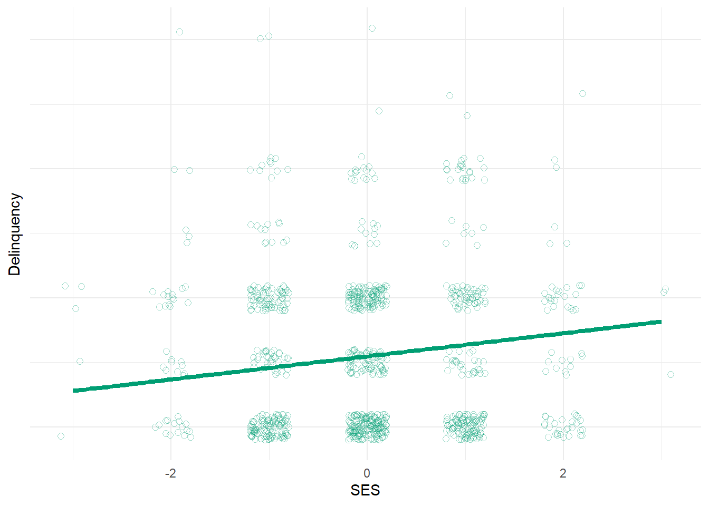
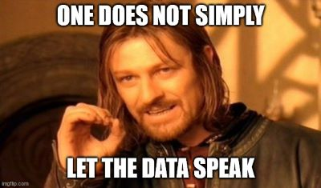
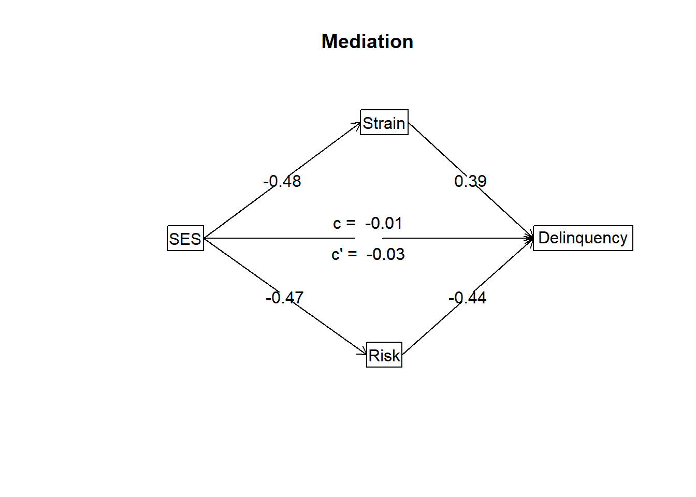

You’ve heard the phrase ‘correlation does not imply causation.’ But does causation imply correlation?
Author
Jon Brauer
Published
April 10, 2023
Pop art portrait of someone very confused, by DALL-E
Thinking up the ladder of causation
I have taught a version of my undergraduate introductory course on theories of crime and deviance (CJUS-P 200 at Indiana University) nearly every semester for the past 15 years and across three different universities. In each of those courses, my second lecture has always been devoted to teaching principles of causality.
I start that segment with a thought question and class discussion about what it means to say that something “causes” something else. Most of the time, students start with correlational descriptions of causality, such as “X causes Y means that when X changes, Y tends to change.” Such answers are what Pearl & Mackenzie refer to as a “rung one” observation on the ladder of causation. In contrast, it is much rarer for students to intuit with minimal prompting a counterfactual or “rung three” description of causality, such as “if X caused Y, then Y might not have changed if X had not changed.”
At first glance, this may be a bit unexpected. We seem to engage in counterfactual thinking naturally, as it appears central to imagination and rational agency. Pearl and Mackenzie go so far as to claim that the ability to use counterfactual thinking to make “explanation-seeking inferences reliably and repeatably” is what “most distinguishes human from animal intelligence, as well as from model-blind versions of AI and machine learning” (2018, p.33). Moreover, the belief that randomization in controlled experiments offers a valid mechanism for making causal inferences relies upon counterfactual reasoning about potential outcomes; these counterfactual justifications underlying classical statistics were proposed by pioneers Jersey Neyman and Sir Ronald Fisher a century ago! Meanwhile, principled counterfactual frameworks using potential outcomes to make causal inferences with observational data have been in use since the 1970s and represent arguably the best approach to causal identification with observational data today.
Yet, counterfactuals also are weird and can be difficult to comprehend, particularly when using formal statistical notation. So, I still start with a discussion of the three basic criteria for establishing causal claims found in most sociology and criminology textbooks (correlation; nonspuriousness; temporal order). From there, I very briefly introduce students to some more advanced ideas, such as simple versus complex causality, causal chains, causal mechanisms and mediation, effect heterogeneity and moderation, and, of course, counterfactual causality. In doing so, I often tell students that, while they might know that correlation does not necessarily imply causation, they may be surprised to learn that causation may exist even in the absence of observed correlation.
Causation without correlation
To say students are surprised by this claim is an understatement - many seem confused or downright skeptical when I state it. After all, didn’t we just discuss how a basic criteria for establishing that X causes Y is observing a correlation between X and Y? Anticipating this confusion, I provide an example involving multiple mediation.
In fact, there are a number of reasons why two variables, X & Y, can be causally related despite the lack of an observed bivariate or conditional (partial) correlation between them that have nothing to do with multiple mediation. Many of these reasons involve a failure to detect a correlation where one is expected to exist due to an existing causal relationship (notice the counterfactual reasoning again?). Examples include poor measurement and insufficient statistical power of a test to detect an effect, or improper modeling of nonlinear (e.g., parabolic) functional relationships, or sample selection bias. Interestingly, it is possible to fail to observe a correlation between two variables even when in situations where there is nearly perfect functional causality (see advanced example at end here).
While it is certainly important to understand how and why we might sometimes fail to statistically detect a correlation between X & Y where one might be causally expected, the example I use draws from a different situation in which one would not even expect the existence of a statistical correlation between X & Y even with precise measurement, sufficient power, careful sampling, and so on, and despite a reasonable belief in the existence of causal processes or mechanisms connecting X & Y. Examples of this situation might include counteracting direct and indirect effects or multiple countervailing mediators.
The statistical literature on mediation was particularly formative for my thinking on this topic. For example, consider the following excerpt from Andrew Hayes’ (2009, p.413) article, Beyond Baron & Kenny: Statistical Mediation Analysis in the New Millennium, which was published around the time I first started teaching my theories of crime course and in the same year that I published my very first article, which included a “test” of a mediation hypothesis using the old school Baron & Kenny method:
Can Effects that Don’t Exist be ‘Mediated’?
If a mediator is a variable, M, that is causally between X and Y and that accounts at least in part for the association between X and Y, then by definition X and Y must be associated in order for M to be a mediator of that effect. According to this logic, if there is no evidence that X affects Y, then how can X’s effect on Y be mediated and so what is the point of estimating indirect and direct effects? But it is possible for M to be causally between X and Y even if X and Y aren’t associated. In this case, some prefer to avoid the term mediator when describing M and instead refer simply to X’s indirect effect on Y through M…
The distinction between mediation and indirect effect is not always made by users of the Baron and Kenny method, who may prematurely end the hunt for evidence of indirect effects if there is no evidence that X and Y are associated. If the size of c [path coefficients] constrained the size of a and b and therefore their product, this logic would make sense. Unfortunately, no such constraints exist, and it is easy to show that the claim that X can’t affect Y indirectly in the absence of a detectable total effect is false.
In this excerpt, Hayes first expresses the common sentiment that X & Y must be correlated if they are causally connected through a mediator, then proceeds to inform us that this view has been debunked as a myth. Yet, despite this being a well-established fact in the mediation/indirect effect literature for many years, I was surprised to find very few accessible examples online to which I could point students and colleagues for a more detailed illustration of the type of situation I regularly describe to them. So, I did what any nerd who recently learned R would do - I simulated some data to help my students better visualize an example. Then, I thought that others also might be uninformed or confused about the issue, and here we are.
AI to the rescue?

Cartoon person seeking wisdom from a computer oracle, by DALL-E
For those interested in such things, I have included the full conversation with ChatGPT in the expandable link below.
Conversation with ChatGPT (4/5/2023, 12:20am)
Jon Brauer Is it possible to have causation without correlation?
ChatGPT Yes, it is possible to have causation without correlation. While causation and correlation are often related, they are not the same thing.
Correlation refers to a statistical relationship between two variables, where a change in one variable tends to be associated with a change in the other variable. However, correlation does not necessarily imply causation, because there could be other factors at play that influence both variables. For example, there is a correlation between the number of ice cream cones sold and the number of drownings each year, but this does not mean that ice cream causes drownings.
Causation, on the other hand, refers to a relationship where one event (the cause) brings about another event (the effect). A causal relationship can exist even if there is no correlation between the two variables, because the relationship is not dependent on a statistical pattern. For example, smoking causes lung cancer, but not everyone who smokes gets lung cancer, and not everyone with lung cancer smokes.
In summary, while correlation and causation are often linked, they are not the same thing, and it is possible to have causation without correlation.
Jon Brauer In your smoking example, if smoking causes lung cancer, wouldn’t there also be a statistical relationship (i.e., a correlation) between smoking and lung cancer? The statement that “not everyone who smokes gets lung cancer, and not everyone with lung cancer smokes” does not rule out the possibility (or the likelihood) of a statistical relationship - it only rules out the possibility of a perfect correlation.
ChatGPT You are correct that in the case of smoking causing lung cancer, there is typically a statistical relationship (i.e., a correlation) between smoking and lung cancer. In fact, smoking is one of the strongest risk factors for developing lung cancer, and studies have consistently shown a strong correlation between smoking and lung cancer.
My previous statement about not everyone who smokes getting lung cancer and not everyone with lung cancer smoking was intended to highlight the fact that while there is a strong correlation between smoking and lung cancer, it is not a perfect correlation. In other words, there are some people who smoke and do not develop lung cancer, and there are some people who develop lung cancer even though they have never smoked.
So while a correlation between smoking and lung cancer does exist, it is not a one-to-one relationship, and it is possible for some smokers to avoid lung cancer and for some non-smokers to develop lung cancer. However, this does not negate the fact that smoking is a significant risk factor for developing lung cancer, and the statistical relationship between the two remains strong.
Jon Brauer Yes, but the question was whether it is possible to have causation without correlation. You gave an example of causation with correlation.
ChatGPT You are correct, my apologies for any confusion. The smoking example I gave was indeed an example of causation with correlation.
To provide an example of causation without correlation, imagine a scenario where a scientist discovers that a specific gene mutation causes a rare disease that affects only a small portion of the population. In this case, there may not be a statistical relationship or correlation between the gene mutation and the disease in the general population, because the disease is so rare and the gene mutation is only found in a small portion of the population. However, there is a clear causal relationship between the gene mutation and the disease.
So, to answer the original question more accurately, it is possible to have causation without a statistically significant correlation between the two variables in the general population, as in the rare disease example described above.
Jon Brauer In that example, again, there is a correlation between the gene mutation and the disease. I did not ask about whether there could be causation without a statistically significant correlation - statistical significance depends on power of the test. So, in this causal example, if you had a sufficiently large sample, the correlation would also be detected, making it another example of causation with correlation.
ChatGPT You are correct, and I apologize for the confusion. In the scenario I described, there is indeed a correlation between the gene mutation and the rare disease, even though it may not be statistically significant in the general population due to the low prevalence of the disease.
It is true that statistical significance depends on the power of the test and the sample size, and it is possible that a correlation between two variables could become statistically significant with a larger sample size. Therefore, in this case, with a larger sample size, the correlation between the gene mutation and the rare disease would likely be detected, and it would be an example of causation with correlation.
Thank you for pointing out this mistake in my previous responses, and I hope this clarification is helpful.
Jon Brauer So, can you think of another example of causation without correlation that does not involve an insufficiently powered test for detecting correlation?
ChatGPT Yes, I can provide another example of causation without correlation that does not involve an insufficiently powered test for detecting correlation.
Consider the example of a person who takes a medication that causes a significant reduction in their symptoms of a medical condition. In this case, there is a clear causal relationship between taking the medication and the improvement in symptoms, but there may not be a statistical correlation between the two variables in the general population.
This lack of correlation could be due to a number of factors, such as individual differences in the severity or type of the medical condition, or differences in the dosage or timing of the medication. Additionally, the relationship between the medication and the symptoms could be confounded by other factors, such as the person’s diet, exercise habits, or stress levels.
So, in this scenario, while there may not be a statistically significant correlation between taking the medication and the improvement in symptoms in the general population, there is a clear causal relationship between the two variables in the individual person who experienced the improvement in symptoms. :::limey Jon Brauer This example again leverages a lack of statistical significance, which I am unmoved by such arguments. For instance, here, there is causation and likely correlation - but the correlation is not detectable due to improper modeling due to issues like heterogeneity in the strength of the effect, confounding, poor measurement, or inadequately specifying dosage and time. Can you think of any other examples that are different from these?
ChatGPT Thank you for the feedback and clarification. I will provide another example of causation without correlation that is different from the previous examples.
Consider the example of a person who develops a fear of flying after experiencing a traumatic event on a plane, such as severe turbulence or an emergency landing. In this case, the traumatic event on the plane is the direct cause of the person’s fear of flying.
However, there may not be a statistical correlation between traumatic events on planes and the development of a fear of flying in the general population. This is because not everyone who experiences a traumatic event on a plane will develop a fear of flying, and some people may develop a fear of flying for other reasons unrelated to traumatic events.
Therefore, in this scenario, there is a clear causal relationship between the traumatic event on the plane and the person’s fear of flying, but there may not be a statistically significant correlation between the two variables in the general population.
Jon Brauer Interesting. If it was a singular event, then would there not be a perfect correlation between flight exposure and fear of flying since there are two data points (pre-exposure level of fear & post-exposure levels of fear)? If it is not a singular event and there is some proportion of the population that develops fear of flying after exposure to flying, then again we are back to the rare genetic cause of disease example - with sufficient data, we would be able to detect this causally driven correlation in the population. Any other ideas?
ChatGPT You make a good point, and I apologize for any confusion. The example I provided may not be a good example of causation without correlation.
Another example of causation without correlation could be the case of a person who develops an allergic reaction to a specific food after consuming it for the first time. In this case, the food is the direct cause of the allergic reaction, but there may not be a statistically significant correlation between consuming the food and developing an allergic reaction in the general population.
This lack of correlation could be due to individual differences in genetics or immune system function, or differences in the amount or preparation of the food consumed. Additionally, the relationship between the food and the allergic reaction could be confounded by other factors, such as the person’s age or other underlying health conditions.
Therefore, in this scenario, while there may not be a statistically significant correlation between consuming the food and developing an allergic reaction in the general population, there is a clear causal relationship between the two variables in the individual person who experienced the allergic reaction.
Jon Brauer Again, this example seems to have a very similar logical structure and empirical implications of your previous examples. I am going to write a blog entry on causation without correlation that covers a different type of example. I will share the idea with you in case it helps you answer questions like this. Another reason there might be causation without correlation is that an exposure affects multiple mechanisms that have countervailing effects on an outcome. For instance, the exposure might be causally related to the mediators and correlated with the mediators, but and the mediators are causally related to the outcome and correlated with the outcome but in opposite directions, thereby resulting in a null (negated or cancelled out) correlation in the population. There would still be causation, though, since one could imagine intervening on one mediating pathway to hold it constant, then the exposure would cause change the outcome - and be correlated with the outcome - through the other mediating pathway. Have you encountered any examples like this before?
ChatGPT Thank you for sharing your idea. That is a very interesting perspective on causation without correlation, and it makes sense that an exposure affecting multiple mechanisms could result in countervailing effects on an outcome, leading to a null correlation in the population.
I have not encountered this specific example before, but I can see how it could arise in situations where there are complex and interrelated causal pathways between an exposure and an outcome. For example, in a study investigating the effects of a particular medication on a disease outcome, the medication may affect multiple biological pathways that have opposing effects on the disease outcome. As a result, the overall correlation between medication use and disease outcome may be null or weak, even though the medication is causing changes in the underlying biological pathways and ultimately influencing the disease outcome.
I hope this example helps to provide a different perspective on causation without correlation, and thank you for bringing up this interesting topic.
To its credit, ChatGPT recognized the possibility of causation without correlation. However, it primarily provided examples where causation exists and correlation would be expected to exist but, for reasons such as event rarity, shoddy measurement, or insufficiently powered tests, researchers are unable to detect an actually existing (i.e., nonzero) correlation. Again, what I wanted was an example where causality exists, yet where we would not expect to detect a correlation (e.g., we might expect r=0).
Causation does require statistical dependence
One final point of clarification before getting to an example. The basic criteria are not really wrong. Causation involves statistical dependence between X and (mechanisms of) Y, and statistical dependence may exist despite a lack of observed linear correlation. I think it may be easier for some people to understand how this might happen for methodological reasons (e.g., imprecise measures; insufficient data; mispecified model) than it is to understand how this might happen for theoretical reasons. Counterfactual reasoning can help; so can causal models or directed acyclic graphs (DAGs).
For instance, you might be wondering if it is really useful or accurate to say that X causes Y if there is no (total) statistical dependence between X & Y - that is, if (in some populations or samples comprised of units with particular levels of key variables) Y does not reliably change after X changes. Yes, I think so! To understand why, it is helpful to consider an example, to rely on causal models, and to engage in counterfactual thinking. There are many possible examples; for simplicity, let’s imagine only four variables - X, M1, M2, and Y - that are causally related like so:
Show code
library(tidyverse)library(ggplot2)library(patchwork)library(psych)# library(devtools)# install_github("jtextor/dagitty/r")library(dagitty)XYdag <-dagitty("dag{ X -> M1 -> Y X -> M2 -> Y }") coordinates(XYdag) <-list(x=c(X=1, M1=2, M2=2, Y=3),y=c(X=2, M1=1, M2=3, Y=2) )plot(XYdag)

In this hypothetical example, imagine that increasing or “dialing up the knob” on X causes a decrease in both M1 and M2. Imagine also that increasing or dialing up M1 causes an increase in Y, whereas an increase in M2 causes a decrease in Y of comparable magnitude in the opposite direction (i.e., countervailing indirect effects). So, when we dial up X, we also causally dial up M1 and M2, which in turn equivalently dials Y up and down - meaning Y does not change when X changes despite changes in mediators.
So, you might still be wondering whether it is reasonable to describe this situation as one in which X causes Y, or whether the statement that this is an example of causation without (XY) correlation is accurate or meaningful. Again, I say YES! To understand why, let’s use counterfactual reasoning. I want you to further imagine that we identify a way to intervene on the X -> M1 -> Y pathway. For instance, perhaps we design an intervention to mitigate or disrupt the X -> M1 causal effect so that, when we dial up X, M1 no longer subsequently increases or it increases to a much lesser degree; that is, our intervention allows us to hold constant the level of M1 following a change in X, thereby negating the positive indirect effect of X on Y through M1. Now in this counterfactual situation, when we dial up X, what would happen to Y? It would change in a causally predictable way: If X increases, Y would decrease due to the negative indirect effect of X on Y through M2!
I hope this abstract example helps illustrate why, without the proper causal model guiding our statistical modeling decisions and interpretations of data, it is easy to fail to observe statistical dependence where it exists (and vice versa) and then to incorrectly infer a lack of causality (or its presence) from the absence (or presence) of observed correlation. To avoid such traps, what we need is to understand theoretically how and why X is related to Y - e.g., by creating a causal diagram that accurately depicts the causal relationship(s) between these variables and by using counterfactual reasoning. Once we identify the correct causal model generating the data, then we can model the data in a way that permits us to observe statistical dependence and identify the causal effect(s) of X on Y. In short, we really need to understand theory, or logical statements of the causal relations between concepts, to properly model and interpret our data.
With all that said, it can be difficult to grasp abstract examples, and it may be tempting to wonder whether such situations really exist in our world. So, let’s draw inspiration from a real study in criminology to add meat to the abstract bones of our example.
Example from criminology
Specifically, we will draw inspiration from Bradley Wright and colleagues’ (1999) paper in Criminology entitled “Reconsidering the relationship between SES and delinquency: Causation but not correlation.” Seems fitting, eh?
The basic idea is this: There is a long history of debates over the SES-delinquency relationship. Some theories specifically posit a negative causal relationship (i.e., low SES -> high delinquency), yet observational research has documented inconsistent patterns (e.g., weak negative, nonexistent, or even positive relationships). Wright and colleagues argue that this state of affairs may be due to SES simultaneously having positive and negative causal effects on crime through countervailing mechanisms. Together, the positive and negative effects of these mechanisms may generally offset each other in many survey datasets, which might result in observing a lack of any bivariate correlation between SES and delinquency (i.e., “total effect” estimate = 0) and/or inconsistent partial correlations (i.e., variable conditional direct effect etimates) depending on which mechanisms are included or excluded from researchers’ statistical models.
We will illustrate how something like this might happen using simulated data. Specifically, we will simulate data for parental SES, child delinquency, and two potential countervailing mechanisms - financial strain and perceived risk of detection of delinquent behaviors. In our simulated example, we will assume parental SES does not directly cause child delinquency and that it indirectly causes child delinquency through both mediating mechanisms. Additionally, we will assume that the causal effects of Parental SES on financial strain and perceived risk of detection are equal in magnitude and that the causal effect of financial strain on delinquency is equal in magnitude yet opposite in direction, such that both indirect or mediated effects offset one another. Below is a directed acyclic graph, or DAG, of this simple causal structure.
Now let’s simulate some data. In doing so, note we round data drawn from continuous (i.e., normal & Poisson) distributions to integers; this adds a bit of noise to the data yet also makes our variables more comparable to the types of ordinal, Likert-type measures we see in our field.
Show code
# X = Parental SES# Y = Child delinquent behavior# F = Mediatior through which high Parent SES might decrease delinquency - e.g., less financial (S)train# P = Mediators through which high Parent SES increase delinquency - e.g., lower perceived (R)isk of detection# Strain -> Delinquency <- Risk # Strain <- SES -> Riskset.seed(1138)n <-1000# McElreath method (p.153)# SES <- rnorm(n)# Strain <- rnorm(n,SES)# Risk <- rnorm(n,SES)# Delinquency <- rnorm(n,Strain-Risk)# # https://www.tandfonline.com/doi/pdf/10.1080/10691898.2020.1752859set.seed(1138)n <-1000SES <-round(rnorm(n),digits=0)Strain <-round(-.5*SES +rnorm(n),digits=0)Risk <-round(-.5*SES +rnorm(n),digits=0)Delinquency <-round(.5*Strain +-.5*Risk +0*SES +rpois(n,1),digits=0)simdata <-tibble(SES, Strain, Risk, Delinquency)simdata <- simdata %>%mutate(Delinquency =ifelse(Delinquency <0, Delinquency ==0, Delinquency))simdata
Let’s examine the bivariate correlations between our simulated variables.
Show code
# https://r-coder.com/correlation-plot-r/ pairs.panels(simdata,smooth =FALSE, # If TRUE, draws loess smoothsscale =FALSE, # If TRUE, scales the correlation text fontdensity =TRUE, # If TRUE, adds density plots and histogramsellipses =FALSE, # If TRUE, draws ellipsesmethod ="pearson", # Correlation method (also "spearman" or "kendall")pch =21, # pch symbollm =TRUE, # If TRUE, plots linear fit rather than the LOESS (smoothed) fitcor =TRUE, # If TRUE, reports correlationsjiggle =FALSE, # If TRUE, data points are jitteredfactor =2, # Jittering factorhist.col =3, # Histograms colorstars =TRUE, # If TRUE, adds significance level with starsci =TRUE) # If TRUE, adds confidence intervals
As the pairs plot shows, there is virtually no correlation between SES and delinquency (r = -0.01). However, SES is negatively correlated with both mediators - financial strain (r = -0.43) and perceived risk (r = -0.40). Additionally, the mediator-delinquency correlations are similar in magnitude but opposite in direction (r = 0.30 for financial strain; r = -0.35 for perceived risk).
Given this, if we estimate a linear model regressing delinquency on SES without the mediators, we should see another near-zero association between SES and delinquency because this model essentially reproduces the bivariate correlation (with a partially standardized beta coefficient). This means the total effect of SES - its direct effect plus all indirect effects through other mechanisms like financial strain and perceived risk, all combined - is estimated to be virtually zero (b = -0.01, se = 0.04). Thus, either SES has no direct or indirect causal effects on delinquency, or SES has direct and/or indirect causal effects on delinquency but we have failed to adequately identify it with our statistical model (and with the assumed causal model underlying it). For instance, perhaps the causal effect is non-linear, with positive and negative effects on delinquency at different levels of SES that average out to a null total effect. Or, perhaps SES has countervailing indirect effets through different mediating mechanisms and, together, the mediators offset each other to result in no total causal effect.
Of course, we know this last explanation is the true data generating process here because we simulated the data accordingly! However, in real-world data analysis, if you were to observe no correlation between two variables, you now know that it is unwise to immediately assume that there is no causal relationship between them.
Linear regressions
The scatterplot and regression line from our bivariate linear regression model again illustrates the lack of total association between our simulated SES and delinqueny variables. (Note that we used geom_jitter() to slightly offset observations that fell at the exact same place on the plot; with this method, observations appear to cluster around their actual values, which permits you to see where data are plentiful or sparse along the observed distributions.)
Now, let’s estimate a linear model regressing delinquency on SES and include both mediators as predictors in the model as well and then plot the regression line (with mediators set at their mean values). Once again, we should see a near-zero association between SES and delinquency, but for very different reasons this time. In this model, we are estimating what is commonly referred to as the direct effect of SES after stratifying on (aka, adjusting for) any potential indirect effects through financial strain and perceived risk mechanisms. Of course, we simulated our data in such a way that there would be no direct causal effect of SES on delinquency in our simulated data and, after including both mechanisms in the model, we accurately estimate virtually no direct effect of SES on delinquency (b = -0.03, se = 0.04). Hence, this plot looks comparable to the bivariate one above.
Show code
lm1b <-lm(Delinquency ~ SES + Strain + Risk, data=simdata)# summary(lm1b)summary(lm1b)$coefficients[,1:4]
Estimate Std. Error t value Pr(>|t|)
(Intercept) 1.07938412 0.03338240 32.3339287 2.126993e-157
SES -0.02905861 0.03980686 -0.7299899 4.655680e-01
Strain 0.38859596 0.03290744 11.8087577 3.274331e-30
Risk -0.43975564 0.03164821 -13.8951191 2.980525e-40
Show code
# plot(simdata$SES, simdata$Delinquency)# abline(lm1b)#equation for delinquency regression line in model with both mediators at means eqY1b=function(x){coef(lm1b)[2]*x +coef(lm1b)[1] +coef(lm1b)[3]*mean(simdata$Strain) +coef(lm1b)[4]*mean(simdata$Risk) }lmYplot2 <-ggplot(simdata,aes(y=Delinquency,x=SES)) +geom_jitter(alpha=.4, shape=21, size=2, width=.2, height=.2, color="#009E73") +stat_function(fun=eqY1b, geom="line", color="#009E73", size=1.5) +theme_minimal() +theme(axis.text.y=element_blank(), axis.ticks.y=element_blank() ) +labs(x="SES", y="Delinquency")lmYplot2

Note that this model above also estimates a positive effect of financial strain (b = 0.39, se = 0.03) and a negative effect of perceived risk (b = -0.44, se = 0.03) on delinquency. So, we might conclude that these theoretical mechanisms are related to delinquency as expected. But how would we know SES has indirect causal effects on delinquency through these mechanisms - i.e., that these variables mediate the SES-delinquency relationship? Well, we could estimate additional models regressing each mediator on SES; if SES predicts each mediator (which we know it does in our simulated data) and if each mediator predicts delinquency then, with certain strong assumptions in place (e.g., no exposure-mediator interaction and no unmeasured confounding of any paths; see here, here, and here), we can infer indirect causal effects of SES on delinquency. This is essentially the logic behind the classic Baron & Kenny method. We can also extend this logic to test for and estimate the magnitude and confidence intervals around such indirect effects through each specific mediator.
But without jumping ahead to mediation tests, what would have happened if we had failed to specify the appropriate causal model ahead of time and, as a result, we mistakenly included only one mediator in the model with SES predicting delinquency? Let’s add financial strain to the model and exclude perceived risk from the model, then see what happens.
Show code
lm1c <-lm(Delinquency ~ SES + Strain, data=simdata)# summary(lm1c)summary(lm1c)$coefficients[,1:3]
Estimate Std. Error t value
(Intercept) 1.0982531 0.03642628 30.150019
SES 0.1790345 0.04027868 4.444895
Strain 0.3951323 0.03593409 10.996029
Show code
# plot(simdata$SES, simdata$Delinquency)# abline(lm1c)#equation for delinquency regression line in model with one mediator (at its mean) eqY1c=function(x){coef(lm1c)[2]*x +coef(lm1c)[1] +coef(lm1c)[3]*mean(simdata$Strain) }lmYplot3 <-ggplot(simdata,aes(y=Delinquency,x=SES)) +geom_jitter(alpha=.4, shape=21, size=2, width=.2, height=.2, color="#009E73") +stat_function(fun=eqY1c, geom="line", color="#009E73", size=1.5) +theme_minimal() +theme(axis.text.y=element_blank(), axis.ticks.y=element_blank() ) +labs(x="SES", y="Delinquency")lmYplot3

Uh oh. Suddenly, our model estimates a positive effect of SES on delinquency! Why?! Well, since we stratified on (adjusted for) financial strain, we essentially removed SES’s indirect effect on delinquency that operates through financial strain from our causal estimate. However, since we simulated these data, we know that SES also has an indirect effect on delinquency through perceived risk that is excluded from our model. So, the positive causal estimate of SES on delinquency in this model (b = 0.18, se = 0.04) reflects any direct effects of SES on delinquency (which we set to equal “0” in our simulation) and any indirect effects of SES on delinquency through unmeasured mediators - in this case, through perceived risk. We know that, in our simulated example, SES increases delinquency by reducing perceived risk of detection among this with high SES - that is, SES has a positive indirect causal effect on delinquency through perceived risk. Likewise, if we stratify on financial strain, thereby adjusting our estimate for this other known mediator, we are left with a positive estimate of the net causal effect of SES on delinquency (which we know is through perceived risk).
This should help illustrate an important point about so-called direct effect estimates - they are not really estimating “direct” effects at all. Rather, like bivariate correlation and regression coefficients, they are simply descriptive statistics that summarize the total effect of a predictor (SES) on an outcome (delinquency) through any and all unmeasured mechanisms.
This is an essential point. Imagine we were analyzing real non-simulated observational data and, after including measures of known mediating mechanisms (e.g., financial strain; perceived risk) in our model, we observed no association or “direct effect” of SES on delinquency (like in our second model lm1b above). In that situation, it is possible that there are no other mediating mechanisms through which SES might cause delinquency. However, it is also possible that there are additional unmeasured mechanisms that, combined, offset each other to result in a near-zero total remaining causal effect!
Moreover, bivariate correlations and partial regression coefficients also may be biased by effects of other unmeasures sources of confounding as well. In our simulation, we made a strong simplifying assumption that there were no such unmeasured sources of confounding and that we had identified all relevant mechanisms. However, with real data, such assumptions often are highly implausible. Hence, if one cares about causal effects of a variable (SES) on an outcome (delinquency) - total, indirect, or otherwise - then it is essential to identify the appropriate causal model and then to include (or exclude) variables as appropriate to accurately estimate the causal effect of interest. One cannot simply let the data speak.

Data cannot speak meme
Simple mediation tests
Finally, let’s illustrate a simple test of the indirect effect of SES on delinquency using mediate() from the psych package.
Show code
mediate(Delinquency ~ SES + (Strain) + (Risk), data = simdata, n.iter =10000) %>%print(short =TRUE)

Mediation/Moderation Analysis
Call: mediate(y = Delinquency ~ SES + (Strain) + (Risk), data = simdata,
n.iter = 10000)
The DV (Y) was Delinquency . The IV (X) was SES . The mediating variable(s) = Strain Risk .
Total effect(c) of SES on Delinquency = -0.01 S.E. = 0.04 t = -0.29 df= 998 with p = 0.77
Direct effect (c') of SES on Delinquency removing Strain Risk = -0.03 S.E. = 0.04 t = -0.73 df= 996 with p = 0.47
Indirect effect (ab) of SES on Delinquency through Strain Risk = 0.02
Mean bootstrapped indirect effect = 0.02 with standard error = 0.03 Lower CI = -0.04 Upper CI = 0.08
R = 0.5 R2 = 0.25 F = 112.47 on 3 and 996 DF p-value: 3.83e-79
To see the longer output, specify short = FALSE in the print statement or ask for the summary
As before, these models estimate a near-zero total effect (c = -0.01) and so-call “direct effect” (c’ = -0.03) of SES on delinquency. However, SES is negatively associated with both mediators, and each mediator has a comparably sized yet opposite effect on delinquency. The text results also indicate that the total indirect effect of SES on delinquency through both mediators is nearly zero as well (Mean bootstrapped indirect effect [ab] of SES on Delinquency through Strain and Risk = 0.02; standard error = 0.03; 95% CI = [-0.04, 0.08]). This should be unsurprising since we simulated the data so that the two indirect effects would equally offset one other, resulting in a total indirect effect of zero.
We could re-estimate the model, specifying each mechanism separately as a posited mediator, to calculate an estimate of the specific indirect effect through each mediator. Or, we could multiply the SES->Mediator path coefficient and the Mediator->Delinquency path coefficient together to get basic estimates of these specific indirect effects. For instance, using this “product of ab coefficients” approach, we would estimate a negative indirect effect of SES on delinquency through financial strain (-0.48 * 0.39) approximately equal to -0.19 and a positive indirect effect through perceived risk (-0.47 * -0.44) approximately equal to 0.21. As expected, these countervailing indirect effects nearly perfectly offset one another!
So, this was a long-winded illustration of just one way that two variables might be causally related even in the absence of observing a (bivariate; total; direct) correlation between them!
Concluding cautions
Finally, remember that although this example was inspired by a published study, ours is also a contrived example using simulated data designed to help you think more deeply about causation and (non)correlation. With simulated data, we create the rules and can ensure strong mediation assumptions are met. Yet, in the real world of messy observational data, there are often countless plausible causal models that could have generated the patterns of correlations in one’s data. For an excellent example, check out Julia Rohrer’s blog entry about hunting for indirect effects in the absence of a total effect (e.g., correlation) between X & Y. She warns:
Third, be wary of mediation in the absence of a total effect. There may be scenarios in which it makes sense, but confounding may be the more plausible alternative explanation in other scenarios.
Her example beautifully, or frighteningly, illustrates how a collider can produce an erroneous inference about an indirect effect. You might be wondering to yourself: what the heck is a collider? Great question. To us, it is the scary monster in our statistical modeling closet that keeps us up at night; neither of us have ever really seen the monster, but we’ve read enough stories about it to be convinced that it is there. We’ll try tackling that one another time…